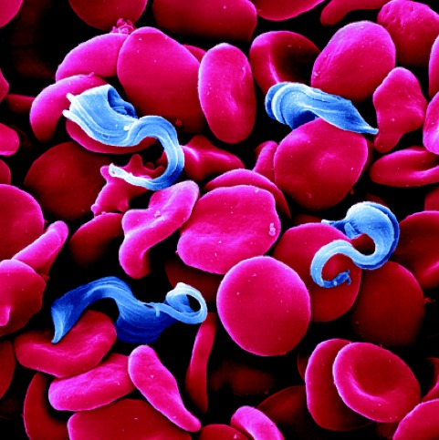
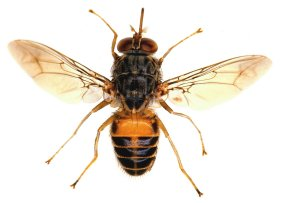
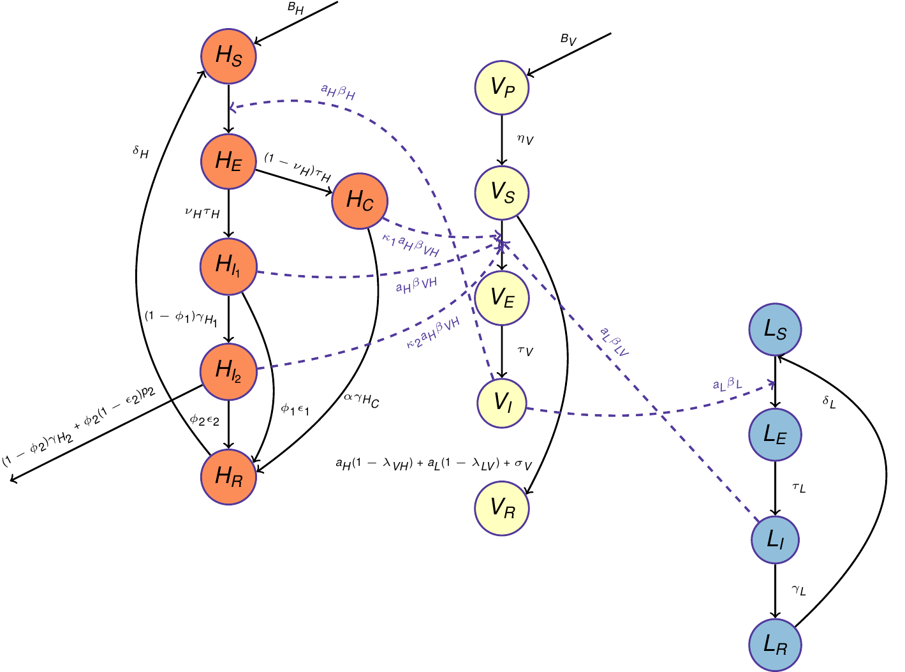

HAT
Table of Contents
1 Introduction

Human African Trypanosomiasis (HAT), which is fatal if left untreated, continues to present a serious health risk to humans in vast regions of Sub-Saharan Africa. It is caused by two sub-species of the protozoan parasite Trypanosoma brucei (T.b.), and is transmitted by tsetse flies. The sub-species, T.b. gambiense, is responsible for the majority of reported cases of HAT, and is transmitted by tsetse flies. Over the last decade, expanded control efforts have led to a decline in the number of new HAT cases, spurring the WHO to include T.b. gambiense HAT on its roadmap for 2020 elimination.
To inform implementation of WHO's elimination goal, it is imperative to understand the likelihood of whether the control interventions are sufficient and, if not what other complementary strategies would synergistically facilitate achieving the 2020 target.
We developed a mathematical model for Gambian HAT to evaluate vector control as well as screen and treat strategies. We will calibrate our model to data from various "foci of infection" such that they vary in terms of transmission intensity or/and ecological settings. Currently, we are trying to use data from Boffa, Guinea which is classified as "medium transmission intensity" foci and where livestock play a limited role in HAT transmission cycle.
A brief introduction to various aspects of Gambian HAT and tsetse fly follows:
1.1 Gambian HAT
Gambian HAT is caused by T.b.gambiense and transmitted by the Palpalis-group species of tsetse, particularly subspecies of Glossina fuscipes and Glossina palpalis. This group of tsetse is commonly known as riverine tsetse and generally infest relatively humid habitats fringing the rivers, lake shores and wetlands of West and Central Africa.
The disease progress over several years from the initial symptoms of fever, headaches and lymphadenopathy (Stage I) through neuropsychiatric disorders (Stage II) and sleep disturbance (hence the name) and in most cases death.
1.2 Tsetse fly

In contrast to other vectors like mosquitoes, blackflies and sandflies, both sexes of tsetse rely exclusively on blood for all their nutritional needs. Tsetse become infected after feeding on an infected host. The trypanosomes undergo a complex process of maturation in the fly and after a period of about 20-40 days the infective forms appear in the salivary glands of the fly which, thereafter remains potentially infective to any humans it bites. Most flies are inherently refractory to infection and even those that are not refractory to infection are most susceptible during their first blood meal.
Tsetse have an unusual form of reproduction, termed adenotrophic viviparity, in which the larva develops within the female. From the age of about 6 days, adult females produce a single egg which matures in the uterus for about 7-12 days, the duration being dependent of temperature. A single mature third-stage larva is deposited by the female on loose soil and it burrows into the ground and pupates. The time to deposition for subsequent larvae is shorter than for the first offspring and the time between offspring decreases with increasing temperature. A mature adult fly emerges 20-40 days after deposition and this pupal duration also decreases with increasing temperature. This resultant low rate of reproduction is only sustainable because of relatively long life span of tsetse flies.
- Mortality: In one field study, female mortality was about 10% per day in newly emerged flies, fell to about 2% by age 10 days, increasing slowly thereafter. The pattern was similar for male but mortality increased much more rapidly with age. The changes relate to low-fat levels and poorly developed flight musculature in newly emerged flies, resulting in the double difficulty of needing to find and feed on a host rapidly but with a limited flight capacity. Accordingly, many young tsetse flies either die of starvation, or by attempting to feed off high-risk hosts such as humans. Those that do feed successfully build up energy reserves and flight muscles, and subsequent mortality declines. Increased mortality in older flies is associated with increased wing wear resulting in diminished flight capacity. Adult mortality also increases with temperature and may be up to six times as high in the hot part of the year as in the cool part.
- Abundance and distribution: Tsetse populations are able to persist at remarkably low densities. Obtaining reliable estimates of absolute densities of tsetse for sparse populations is difficult, but it seems likely that they can survive at densities of 1 tsetse/km2 or less, while maximum densities seems to be in order of 10,000 tsetse/km2. Tsetse are highly mobile, moving up to 1 km per day. For the more typical habitats of riverine tsetse, flies are confined to the vegetation fringing rivers and lakes and hence displacement is largely along river margins and lake shores. The important consequence of the high mobility of tsetse is that populations of tsetse are seldom isolated and hence migration of tsetse into and out of an HAT focus is the norm.
- Feeling interval: Male and females are obligate blood feeders obtaining meals at 2-5 day intervals. The blood meal provides all of the fly's requirements for energy, water and growth, including production of larvae. Hence for tsetse, it imperative to find and feed on a host regularly to avoid starvation. The defensive behavior of hosts and predatory insects (e.g. Asilidae (robber or assassin flies) and Bembicidae (a family of wasps)) in the host vicinity also pose a risk to feeding tsetse.
- Host selection: Tsetse use a combination of olfactory and visual cues to locate their hosts. In general savannah tsetse feed on Suidae and Bovidae, particularly warthog and buffalo in wilderness area and cattle where they are present. Humans are rarely bitten by savannah tsetse; odours and visual stimuli produced by humans are repellant and those who do bite humans tend to be young and/or in an advanced stage of starvation. Riverine tsetse have broader range of hosts which can include primates, Suidae, Bovidae and reptiles, particularly the Nile monitor lizard. Humans are not repellent to riverine tsetse and as a consequence, humans can form an important part of their diet.
1.3 Trypanosome biology
The latent period between initial inoculation of T.brucei and a mammalian host becoming infectious is about 7-14 days. The duration of subsequent infection ranges between several months and years and is strongly right-skewed with some cases persisting for many years without morbidity or death. The mean duration for stage I is 17 months and for stage II is 16 months. Severe illness and/or hospitalization during stage II may effectively remove the human host from the population of hosts by preventing contact with tsetse flies, in which case the mean duration of infectiousness would be 17 months.
The probability of a fly being infected depends not only on the levels of parasitaemia in the host but also the age, nutritional condition, sex and species of the fly itself. The 'teneral effect'. Newly emerged unfed tsetse ('teneral' flies) that are typically less than 3 days old are much more susceptible to infection with subspecies of T.brucei at their first blood meal than older flies.
1.4 Control for Gambian HAT
Due to the absence of a vaccine, intervention strategies against HAT rely on vector control and on active and passive case detection followed by treatment. These two strategies were initially effective, and the disease was nearly eradicated in the early 1960s. However, a collapse of surveillance and control activities int he endemic countries, often due to periods of political instability, led to progressive re-emergence of the disease since early 1990s.
Since the resurgence of HAT, expanded control activities has facilitated an overall decline in the number of new cases of HAT being reported to WHO annually. The achievements of the past 20 years have been realized almost exclusively through active case detection and treatment. Screening of the population is based on the use of Card Agglutination Test for Trypanosomiasis followed by staging of positive cases through examination of the cerebrospinal fluid which involves a lumbar puncture.
Currently, the drugs used to treat Gambian HAT are pentamidine for stage I and nifurtimox-eflornithine combination therapy for stage II. While vector control has not been an important part of efforts against Gambian sleeping sickness, the recent development of cost-effective methods to control riverine tsetse suggests that tsetse control will form an important part of efforts to eliminate Gambian HAT in the future.
1.5 Usefulness of HAT models
The few models of HAT that exist suggest that elimination of HAT will not require killing the last fly or finding and treating the last case. Rather, reducing the mean infectious period of humans through case detection and treatment, and reducing the longevity and density of tsetse flies through vector control may eliminate transmission. There are many questions that HAT models can be used to answer:
- What percentage of a human population needs to be screened and treated to eliminate a focus of Gambian HAT transmission ?
- At what frequency should such a screen and treat program be repeated ?
- What deduction in the density and longevity of tsetse flies is required to eliminate transmission of HAT ?
- How long must interventions be applied to eliminate a focus ?
- Why is HAT not more widespread, and will movement of reservoir hosts, tsetse or infected humans cause it to spread ?
- How does HAT persist at the low levels of prevalence that have been measured in humans and tsetse flies ?
2 Data
2.1 Available data
- Plot of prevalence data
- Age Distribution of HAT
- Summary of Data
- Survey Results
- Between 1997-2009
- Disease Stages
- Some other data from papers
NOTE:
- Before 2008, no medical survey by mass screening was performed in the area and all HAT cases were diagnosed passively in that period.
- Before 2008, no medical survey by mass screening was performed in the area and all HAT cases were diagnosed passively in that period.
- In 2008 and 2010 medical surveys were organized by mass screening but only in selected villages (where new cases had been passively diagnosed in the previous years).
- In 2012 and 2013, all villages from the area were included in the surveys.
3 Model
We constructed a three-species SEIR differential-equation model for T.b.gambiense trypanosome infection among tsetse, humans and livestocks based on previous work Rogers. The population of each species: tsetse (V), humans (H) and livestocks (L) is divided into 4 states: susceptible (VS, HS, LS), exposed (VE, HE, LE), infectious (VI, HI1, HI2 LI) and recovered (VR, HR, LR) respectively.

- Tsetse Dynamics:
Susceptible tsetse can only become infected during their first blood
meal, which they take with rates aH and aL on humans and
livestocks respectively. Tsetse do not become infected, if they do
not become infected during a period of time (1/σV) immediately
after emergence. After an incubation period of 1/τV, tsetse
become infectious and do not recover and finally die.
Birth and death rate: We take birth rate for tsetse (BV) to be constant, whereas the death rate to be increasing quadratic to measure the effect of intra-species competition on death rate: \[\mu_V = \mu_{V_0} (1+\mu_{V_1}V) \] where μV0 is the death rate in the absence of intra-species competition, while μV1 measures the effect of intra-species competition on death rate. - Vector Control:
The vector control methods to be considered are:
- Traps, Insecticide
- Sterilized male release
- Human Dynamics: Humans become infected when bitten by an infected tsetse with probability βH, incubate for a period of 1/τH , and then are stage I infectious. Without treatment individuals in stage I progress to stage II after a duration of 1/γH1 and dies after a duration of 1/γH2 if left untreated in stage II. We assume that only tsetse become infected only after biting stage I infectious individuals as stage II infectious are severely ill at home or hospital and thus hardly come in contact with tsetse. /The foci of infection for Gambian HAT that we are considering are from rural areas and it may be reasonable to assume that the population is stable and so we assume population to be constant by making rate birth rate equal to the natural and disease/treatment induced death rates.
- Human Treatment: Case detection and treatment still remains one
of the primary methods of controlling gambiense HAT. The case
detection is conducted by active case-finding through mobile teams
or when patients visit health structures (passive case finding).
In our model, the rate at which an infectious individual in any
stage receive treatment depends on efficacy and coverage of
treatment. The coverage of treatment at stages I and II is defined
by parameters φ1 and φ2 as
\[ \phi_i = P_i P_{i+/D} P_{iT/+}\]
where for i = 1, 2, Pi is the probability that a stage i patient
gets a CATT test, Pi+/D is sensitivity of the diagnostic tests
that is the probability that a stage i patient gets a positive CATT
test and a positive parasitology test, and PiT/+ is the
probability that a stage i patient gets treatment after getting
positive CATT test and a positive parasitology test.
A stage I patient remains in stage I and later progresses to stage II in case of treatment failure. Similarly, treatment failure in stage II results into patient either remaining stage II infectious and later dying due to the disease or dying due to the side effects of the stage II treatment with a rate of p2. - Livestock Dynamics: Livestocks are modeled similar to humans, but
only one infectious class is considered. Livestock can become
infected after being bitten by an infected tsetse with probability
βL, incubate infection for a period of 1/tauL and are
infectious for a period of 1/γL and then immune for a period
of 1/δL. Few concerns regarding Livestock modeling/dynamics:
- Do Livestock die from AAT/nagna ?
- Are we only treating Livestock as reservoir ? Then, do we need full dynamics ? Not important for Boffa.
3.1 Model Equations
- \(Tsetse:\)
- \(Human:\)
where \(B_H = \mu_H H + [(1-\phi_2)\gamma_{H_2} + \phi_2(1-\epsilon_2)p_2]H_{I_2}\)
- \(Livestock:\)
The probabilities of a susceptible tsetse becoming infected from a blood meal from humans and animal hosts repectively are
\begin{equation} \label{prob} \begin{split} \lambda_{VH} & = \beta_{VH} \frac{H_{I_1} +\kappa_1 H_C + \kappa_2 H_{I_2} }{H}, \\ \lambda_{VL} & = \beta_{VL} \frac{L_I}{L}. \end{split} \end{equation}where \(\beta_{VH}\) and \(\beta_{VL}\) are transimission probabilities from human to tsetse and animal hosts to tsetse respectively and \(\kappa\) is 0 or 1 depending on our belief about whether individuals in stage II contribute to transmission or not.
The total population sizes are given by \(V = V_S + V_E + V_I + V_R\) for tsetse, \(H = H_S + H_E + H_I + H_R\) for humans and \(L = L_S + L_E + L_I + L_R\) for animal hosts. The model parameters and their estimates used from literature that are used in simulations are in the table below.
3.2 Model Parameters
- Tsetse
Parameter Definition Value Interval Reference Note \(1/\eta\) Duration of pupae stage in tsetse \(20\) \(20-40 ~d\) Rock et al. 2015 \(B_V\) Tsetse constant birth rate \(0.05 ~d^{-1}\) Rogers 1988 \(\mu_{V_0}\) Tsetse death rate without competition \(0.025 ~d^{-1}\) Rogers 1988 \(\mu_{V_1}\) Death rate competition parameter \(0.0002\) Assumed \(1/\sigma_V\) Susceptibility period in tsetse \(1 ~d\) Rogers 1988 \(a_H\) Tsetse human biting rate \(0.075 ~d^{-1}\) Rogers 1988 \(a_L\) Tsetse livestock biting rate \(0.175 ~d^{-1}\) Rogers 1988 \(\beta_{VH}\) Proportions of tsetse bites on humans \(0.065\) Rogers 1988 Being estimated \(\beta_{VL}\) Trans. prob. from livestock to tsetse \(0.065\) Rogers 1988 \(1/\tau_V\) Incubation period in tsetse \(25 ~d\) Rogers 1988 V Tsetse population size (carrying capacity) \(1634\) Assumed Derived - Human
Parameter Definition Value Interval Reference Note \(\mu_H\) Human constant death rate \(1/55~y^{-1}\) Google To update \(\beta_H\) Trans. prob. from tsetse to humans \(0.62\) Rogers 1988 Being estimated \(1/\tau_H\) Incubation period in humans \(12 ~d\) Rogers 1988 \(1/\gamma_{H_1}\) Stage I infectious period without treatment \(1/(365*0.0019) ~y\) \(0.98-2.28 ~y\) Checchi et al. 2008 \(1/\gamma_{H_2}\) Stage II infectious period without treatment \(1/(365*0.0020) ~y\) \(0.95-2.11 ~y\) Checchi et al. 2008 Check their new paper H Human population size \(300\) Assumed Derived - Livestock
Parameter Definition Value Interval Reference Note \(\beta_L\) Trans. prob. from tsetse to livestock \(0.62\) Rogers 1988 \(1/\tau_L\) Incubation period in livestock \(12 ~d\) Rogers 1988 \(1/\gamma_L\) Infectious period in livestock \(50 ~d\) Rogers 1988 \(1/\delta_L\) Immune period in Livestock \(50 ~d\) Rogers 1988 - Treatment
Parameter Definition Value Interval Reference Note \(P_1\) Probability a stage I individual gets a CATT test \(0.0\) Assumed prior active surv. \(P_{1+/D}\) Probability a stage I individual gets a positive CATT and positive parasitology test \(0.87\) \(0.87-0.98\) Brun et al. 2010 \(P_{1T/+}\) Probability a stage I individual gets treated upon getting positive CATT and positive parasitology test \(1\) Data \(P_2\) Probability a stage II individual gets a CATT test \(1\) - prior active surv. \(P_{2+/D}\) Probability a stage II individual gets a positive CATT and positive parasitology test \(0.87-0.98\) Brun et al. 2010 \(P_{2T/+}\) Probability a stage II individual gets treated upon getting positive CATT and positive parasitology test \(1\) Data \(\epsilon_1\) Efficacy of stage II treatment (pentamidine) \(0.94\) Doua et al. 1996 \(\epsilon_2\) Efficacy of stage II treatment (nifurtimox-eflornithine) \(0.965\) Priotto et al. 2009 \(1/\zeta_1\) Treatment period for stage I patients - irrelevant prior active surv. \(1/\zeta_2\) Treatment period for stage II patients - Being estimated \(p_2\) Probability of death due to stage II treatment failure (nifurtimox-eflornithine) \(0.007\) Priotto et al. 2009 \(1/\delta_H\) Immune period in Humans after treatment \(50 ~d\) Rogers 1988
4 Model Fitting
We are using Bayesian Melding for fitting the parameters \(\beta_{VH}\), \(\beta_{H}\) and \(1/zeta_{2}\).
4.1 Populations
- We decided to concentrate on only Boffa East Mainland, because there is data from here for each year.
- The human population is assumed to be constant and from data, total population in Boffa East Mainland is 14500.
- We run the density dependent model with 34 inhabitants/km2 (Kagbadouno et al. 2012) and 5000 tsetse /km2. In the model, H = 340 and V = 50000.
4.2 Fitting
- We estimate the parameters \(\beta_{VH}\), \(\beta_H\) and \(1/\zeta_2\) from year 2008 prevalence data of stage I, stage II and approximate vector prevalence. We also estimate the same parameters to access the effectiveness of control strategies using data from 2010, 2012 and 2013.
- For the model run till 2008, the treatment parameters are \(P_1 = 0\) and \(P_2 = 1\).
- After 2008, we set \(1/\zeta_2 = 1/\zeta_1 = 1\) year and estimate \(P_1\) by running model further for one year combined with 2010 data.
- After 2010, we run model to another 2 years, and estimate the vector-control parameters using data from 2012 and 2013.
4.3 Likelihood
- We assume beta distribution for stage I, II patients as well as
vector prevalence. So, we get the form:
L = β(a,5,4307) β(b,7,4307) β(c,10,1634)
where a,b and c are stage I, stage II and vector prevalence from model output. Other parameters are from the 2008 data.
5 Notes
- Modeling population changes of tsetse:
- Birth and death models:
In Rogers (1990) and Rogers et al. (1994), they estimated birth rates from ambient temperatures and overall density-independent mortalities from observed changes in the population. The important result of this approach was that it was always found essential, for population stability, to include density-dependent mortality in the model.
Hargrove & Williams (1998) modeled adult tsetse mortality to be a linear function of maximum temperature whose coefficients were estimated by the optimized simulation procedure. Results from this study supports indications from other work of the overriding importance of temperature in controlling the density-independent growth rates of tsetse populations. - Models including migration:
Williams et al. (1992) assumed diffusive movement and logistic growth, making no assumption about the mode of operation of the density-dependent processes, except that they applied only to the birth and death processes, not to dispersal rates. In simple terms, it was assumed that each population has a characteristic carrying capacity and that the growth rate slows as this level is approached. This approach has been used by Hargrove (2000) to model the re-invasion of areas cleared of tsetse and by
Hargrove et al. (2000) to model the use of insecticide-treated livestock as a method of tsetse control. It could be used for modeling observed changes in natural tsetse population, both natural and as a consequence of human intervention.
- Birth and death models:
- Do animals recover from AAT naturally ? or with treatment ? What does T.b.gambiense do to animals ?
- In the human model equations, I added the rate by multiplying the coverage with a treatment rate (1/duration of treatment). *Katie suggested that since treatment occurs in a clinic (isolated environment) so it is more reasonable to have it as rate of seeking treatment.* Need to fix it.
- Asymptomatic HAT cases in Humans:
I found some information from Checchi et al. 2008. It is a commonly held assumption that HAT always progresses to stage 2, and is always fatal if untreated. However, the empirical evidence to support this assumption is limited and at least theoretically four "trypano=tolerant" alternative outcomes are possible:- Early (within weeks/months) spontaneous resolution of stage I;
- Chronic, asymptomatic, or mildly symptomatic carriage in stage I without progressing to stage II;
- Progression to stage II followed by early spontaneous resolution;
- Chronic, asymptomatic, or mildly symptomatic carriage in stage
II
Numerous hypotheses have been advanced to explain the persistence of HAT at low prevalence, despite years of case detection:
- Constant reseeding with infections from outside the focus;
- The role of putative animal reservoirsl
- Existence of chronic, asymptomatic carriers, or cases of long
infection, which maintain low-level transmission, and once
control is relaxed, may lead to new outbreak.
Note:
- There was this famous "FEO" case of a Togolese female who remained parasitaemic and healthy over 23 years of follow-up, despite repeated treatment courses. The strain was morphologically consistent with T.b.gambiense, but induced more chronic infections in animals, and may have been non-gambiense.
- Reports of spontaneous infection clearance are rare. Harding and Hutchinson 1948 reported that 9 out of 75 Sierra Leonean asymptomatic parasite-positive cases at baseline no longer showed parasites in weekly tests over the next 2 months. In this community (Fuero), no significant mortality attributable to HAT was noted in spite of infection attach rates > 25% over 3 years. The authors speculated that a novel strain could have been responsible for the atypical outbreak in Fuero.
- Dyleff 1932 reported that 2 Europeans returning from French Congo, who were positive for HAT at an initial test, subsequently tested negative in all further tests in various laboratories.
- Barlovatz 1933 described a patient from the Belgian Congo who refused treatment. Three years and 3 months later, various tests, including inoculation of six Guinea pigs with his blood, were negative.
- Cooke et al. 1937 reported on an Englishman returning from Nigeria and Ghana who, upon post-repatriation screening, was found to be infected but mistakenly discharged without treatment; 6 months later no trypanosomes were found in blood films or upo animal inoculation. The patient was nonetheless treated as a precaution.
Does human trpano-tolerance exist ?
- The majority of untreated gambiense HAT infections progress to death.
- There is some evidence that patients can spontaneously recover from stage I HAT infection. However, all such reports are from West Africa, and may in fact involve different strain.
- There is no evidence that chronic carriage exists, although it is biologically plausible. It is extremely difficult to study this outcome given current diagnostic sensitivity and the ethical requirement to treat all detected infections.
- If spontaneous cure or chronic do occur in stage I, they probably constitute a minority of infections.
- There is no evidence for spontaneous cure from stage II.
- Infections either progress to stage II within a few years, or not at all (as suggested by the absence of reports of very long stage I infection in patients who have been away from HAT-endemic areas for a known period).
- Duration of infection beyond 6-7 years are extremely rare.
6 Things to do
6.1 TODO Run the model to equilibrium and afterwards.
6.2 TODO Estimate the transmission parameters and control effectiveness.
Road sure doesn't seem to be easy and there is always sometime standing in the way sometimes its even you yourself